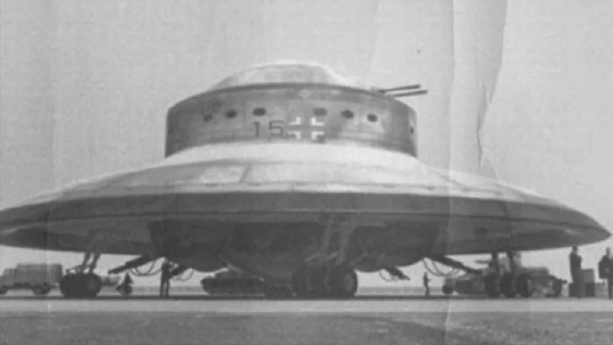

Unidentified Flying Objects
From glowing saucers to mysterious black triangles, UFOs have been spotted by civilians, military pilots, and even astronauts. These sightings fuel decades of debate: Are we alone, or are we being observed?
Still curious? Dive into Alien Lifeforms or Shadow Government theories.
UFO Sightings & Secrets
Across decades, skies have been pierced by unidentified flying objects — silent, swift, and utterly unexplained. From grainy footage to pilot testimonies, the truth seems just out of reach.
Roswell Incident (1947)
Crash in New Mexico. Cover-up or cosmic blunder? The government's silence still echoes.
USS Nimitz Tic-Tac (2004)
Military-grade radar captured a shape-shifting object defying known physics. No wings, no propulsion — just speed and mystery.
In the 20th and 21st centuries, technology caught up with folklore. Pilots from commercial airlines to military jets have logged encounters with fast-moving, unidentified crafts. Some reports describe the objects accelerating from 0 to Mach 10 in a blink — without sonic booms or heat trails. The infamous 2004 Nimitz incident remains one of the most credible encounters to date.
"Leaked" image recovered from a classified database... or so they say.
For centuries, civilizations across the globe have reported sightings of strange objects in the sky — crafts that defy gravity, blink in impossible patterns, or disappear into thin air. Ancient cave drawings depict flying discs; medieval manuscripts mention "fire in the heavens." The phenomenon predates modern flight, begging the question: have they always been watching?
"Sometimes they hover. Sometimes they vanish. But they never explain themselves."— Suspitiusly not human looking figure
Some believe governments have reverse-engineered alien tech from UFO crashes. Are our stealth planes... alien hand-me-downs?— Tófalvi Zalán